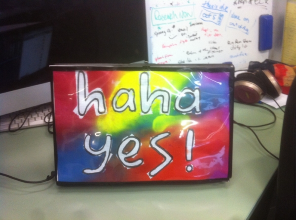

Laptop art holder
Posted on August 10, 2014
by Noon van der Silk
Following the whiteboard-laptop idea, today I made the ‘laptop art holder’. It looks as follows.


I used the following material:
- 1 A3-sized plastic pocket for the front,
- 1 A3-sized cardboard backing for the back,
- A little bit of black electric tape to create the border, (note that the top of the thing is open, so you can change the contents),
- 4 velcro dots attached to the laptop, and the corresponding velcro to the back of the holder itself, and,
- 1 art.
A hobby knife comes in handy, as does a pair of scissors.
The reason I like this is because it’s possible to change in whatever piece of paper you like - of course, it needs to be of the appropriate size.